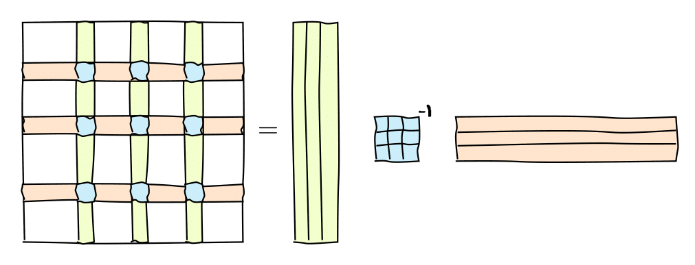

Матрицу можно рассматривать как последовательность векторов, которые являются столбцами матрицы:
A = [a_1, \ldots, a_m],
где a_m \in \mathbb{C}^{n\times 1}.
Произведение матрицы на вектор эквивалентно взятию линейной комбинации этих столбцов
y = Ax \quad \Longleftrightarrow \quad y = a_1 x_1 + a_2 x_2 + \ldots +a_m x_m.
Это частный случай блочной матричной нотации (столбцы также являются блоками), которую мы уже видели (разбиение на блоки для соответствия кэш-памяти, алгоритм Штрассена).
Линейная зависимость
Определение. Векторы a_i называются линейно зависимыми, если существуют одновременно ненулевые коэффициенты x_i такие, что
\sum_i a_i x_i = 0,
или в матричной форме
Ax = 0, \quad \Vert x \Vert \ne 0.
В этом случае мы говорим, что матрица A имеет нетривиальное нуль-пространство (или ядро), обозначаемое N(A) (или \text{ker}(A)).
Векторы, которые не являются линейно зависимыми, называются линейно независимыми.
Линейное (векторное) пространство
Линейное пространство, натянутое на векторы \{a_1, \ldots, a_m\}, определяется как множество всех возможных векторов вида
\mathcal{L}(a_1, \ldots, a_m) = \left\{y: y = \sum_{i=1}^m a_i x_i, \, \forall x_i, \, i=1,\dots, n \right\},
В матричной форме линейное пространство - это множество всех y таких, что
y = A x.
Это множество также называется областью значений (или образом) матрицы, обозначаемой \text{range}(A) (или \text{im}(A)) соответственно.
Размерность линейного пространства
Размерность линейного пространства \text{im}(A), обозначаемая как \text{dim}\, \text{im} (A), это минимальное количество векторов, необходимых для представления каждого вектора из \text{im} (A).
Размерность \text{im}(A) имеет прямую связь с рангом матрицы.
Ранг матрицы
Ранг матрицы A - это максимальное число линейно независимых столбцов в матрице A, или размерность пространства столбцов= \text{dim} \, \text{im}(A).
Вы также можете использовать линейные комбинации строк для определения ранга, т.е. формально существуют два ранга: столбцовый ранг и строчный ранг матрицы.
Теорема
Размерность пространства столбцов матрицы равна размерности пространства её строк.
В матричной форме этот факт можно записать как \mathrm{dim}\ \mathrm{im} (A) = \mathrm{dim}\ \mathrm{im} (A^\top).
Таким образом, существует единственный ранг!
Матрица полного ранга
Матрица A \in \mathbb{R}^{m \times n} называется матрицей полного ранга, если \mathrm{rank}(A) = \min(m, n).
Предположим, у нас есть линейное пространство, порожденное n векторами. Пусть эти векторы случайны, с элементами из стандартного нормального распределения \mathcal{N}(0, 1).
В: Какова вероятность того, что это подпространство имеет размерность m < n?
О: Случайная матрица имеет полный ранг с вероятностью 1.
Скелетное разложение
Очень полезным представлением для вычисления ранга матрицы является скелетное разложение, которое тесно связано с рангом. Это разложение объясняет, почему и как матрицы низкого ранга могут быть сжаты.
Его можно графически представить следующим образом:
 или в матричной форме
A = C \widehat{A}^{-1} R,
где C - это некоторые k=\mathrm{rank}(A) столбцов матрицы A, R - некоторые k строк матрицы A, а \widehat{A} - невырожденная подматрица на их пересечении.
Замечание
Мы еще формально не определили обратную матрицу, поэтому напомним:
Обратной матрицей для матрицы P является матрица Q = P^{-1} такая, что P Q = QP = I.
Если матрица квадратная и имеет полный ранг, то обратная матрица существует.
Доказательство скелетного разложения
Пусть C\in \mathbb{C}^{n\times k} - это k столбцов, основанных на невырожденной подматрице \widehat{A}. Следовательно, они линейно независимы.
Возьмем любой другой столбец a_i матрицы A. Тогда a_i можно представить как линейную комбинацию столбцов C, т.е. a_i = C x_i, где x_i - вектор коэффициентов.
a_i = C x_i - это n уравнений. Мы берем k уравнений из них, соответствующих строкам, содержащим \widehat{A}, и получаем уравнение
т.е. это разделение индексов, и матрица ранга r является суммой матриц ранга 1!
Хранение
Интересно отметить, что для матрицы ранга r
A = U V
можно хранить только U и V, что дает нам (n+m) r параметров, поэтому это может использоваться для сжатия. Мы также можем вычислять произведение матрицы на вектор Ax гораздо быстрее:
Умножение y = Vx требует \mathcal{O}(mr) операций.
Умножение z = Uy требует \mathcal{O}(nr) операций.
То же самое работает для сложения, поэлементного умножения и т.д. Для сложения:
#A fast matrix-by-vector product demoimport numpy as npn =4096r =10u = np.random.normal(size=(n, r))v = np.random.normal(size=(n, r))a = u @ v.Tx = np.random.normal(size=(n,))print(n*n/(2*n*r))%timeit a @ x%timeit u @ (v.T @ x)
204.8
2.39 ms ± 114 μs per loop (mean ± std. dev. of 7 runs, 100 loops each)
29.3 μs ± 293 ns per loop (mean ± std. dev. of 7 runs, 10,000 loops each)
Computing matrix rank
We can also try to compute the matrix rank using the built-in np.linalg.matrix_rank function
#Computing matrix rankimport numpy as npn =50a = np.ones((n, n))print('Rank of the matrix:', np.linalg.matrix_rank(a))b = a +1e-7* np.random.randn(*a.shape)print('Rank of the matrix:', np.linalg.matrix_rank(b, tol=1e-7))a = np.eye(2000)*0.1np.linalg.det(a)
Rank of the matrix: 1
Rank of the matrix: 46
np.float64(0.0)
Таким образом, малые возмущения могут существенно влиять на ранг!
Неустойчивость ранга матрицы
Для любой матрицы A ранга r с r < \min(m, n) существует матрица B такая, что ее ранг равен \min(m, n) и
\Vert A - B \Vert = \epsilon.
Вопрос: Означает ли это, что численно ранг матрицы не имеет смысла? (То есть, малые возмущения приводят к полному рангу!)
Ответ: Нет. Мы должны найти матрицу B такую, что \|A-B\| \leq \epsilon и B имеет минимальный ранг. Поэтому мы можем вычислить ранг только с заданной точностью \epsilon. Одним из подходов к вычислению ранга матрицы r является SVD.
Аппроксимация низкого ранга
Важной задачей во многих приложениях является нахождение аппроксимации низкого ранга для заданной матрицы с заданной точностью \epsilon или рангом r. Примеры: * анализ главных компонент * рекомендательные системы * метод наименьших квадратов * сжатие нейронных сетей
Эти задачи могут быть решены с помощью SVD.
Сингулярное разложение
Для вычисления аппроксимации низкого ранга нам необходимо вычислить сингулярное разложение (SVD).
Теорема Любая матрица A\in \mathbb{C}^{n\times m} может быть представлена как произведение трех матриц:
A = U \Sigma V^*,
где - U - унитарная матрица размера n \times K, - V - унитарная матрица размера m \times K, K = \min(m, n), - \Sigma - диагональная матрица с неотрицательными элементами \sigma_1 \geq \ldots, \geq \sigma_K на диагонали. - Более того, если \text{rank}(A) = r, то \sigma_{r+1} = \dots = \sigma_K = 0.
Доказательство
Матрица A^*A является эрмитовой, следовательно, диагонализируема в унитарном базисе (будет обсуждаться далее в курсе).
A^*A\geq0 (неотрицательно определена), поэтому собственные значения неотрицательны. Следовательно, существует унитарная матрица V = [v_1, \dots, v_n] такая, что
V^* A^* A V = \text{diag}(\sigma_1^2,\dots, \sigma_n^2), \quad \sigma_1\geq \sigma_2\geq \dots \geq \sigma_n.
Пусть \sigma_i = 0 для i>r, где r - некоторое целое число. Пусть V_r= [v_1, \dots, v_r], \Sigma_r = \text{diag}(\sigma_1, \dots,\sigma_r). Следовательно
V^*_r A^* A V_r = \Sigma_r^2 \quad \Longrightarrow \quad (\Sigma_r^{-1} V_r^* A^*) (A V_r\Sigma_r^{-1} ) = I.
В результате, матрица U_r = A V_r\Sigma_r^{-1} удовлетворяет U_r^* U_r = I и, следовательно, имеет ортогональные столбцы. Добавим к U_r любые ортогональные столбцы, которые ортогональны столбцам в U_r, и обозначим эту матрицу как U. Тогда
AV = U \begin{bmatrix} \Sigma_r & 0 \\ 0 & 0 \end{bmatrix}\quad \Longrightarrow \quad U^* A V = \begin{bmatrix}\Sigma_r & 0 \\ 0 & 0 \end{bmatrix}.
Поскольку умножение на невырожденные матрицы не меняет ранг A, мы имеем r = \text{rank}(A).
Следствие 1: A = \displaystyle{\sum_{\alpha=1}^r} \sigma_\alpha u_\alpha v_\alpha^* или поэлементно a_{ij} = \displaystyle{\sum_{\alpha=1}^r} \sigma_\alpha u_{i\alpha} \overline{v}_{j\alpha}
вот почему важно смотреть на скорость убывания сингулярных значений.
Вычисление SVD
Алгоритмы для вычисления SVD сложны и будут обсуждаться позже.
Но для численных расчетов мы уже можем использовать NumPy, JAX или PyTorch!
Вернемся к предыдущему примеру
#Computing matrix rankimport numpy as npn =50a = np.ones((n, n))print('Rank of the matrix:', np.linalg.matrix_rank(a))b = a +1e-5* np.random.randn(*a.shape)print('Rank of the matrix:', np.linalg.matrix_rank(b, tol=1e-7))
%matplotlib inlineimport numpy as npimport matplotlib.pyplot as pltplt.rc("text", usetex=False)n =100a = [[1.0/(i-j+0.5) for i inrange(n)] for j inrange(n)] #Hilbert matrix da = np.array(a)u, s, v = np.linalg.svd(a)s - np.pi#plt.semilogy(s/s[0])#print(s[50] - np.pi)#plt.plot(s[:30], 'x')#s#plt.ylabel(r"$\sigma_i / \sigma_0$", fontsize=24)#plt.xlabel(r"Singular value index, $i$", fontsize=24)# plt.grid(True)# plt.xticks(fontsize=26)# plt.yticks(fontsize=26)# #We have very good low-rank approximation of it!
где y - вектор длины n, а x - вектор длины r.
Данные организованы в виде выборок: мы наблюдаем векторы
y_1, \ldots, y_T,
но не знаем матрицу A, тогда факторная модель может быть записана как
Y = AX,
где Y имеет размер n \times T, A имеет размер n \times r и X имеет размер r \times T.
Это в точности модель ранга r: она говорит нам, что векторы лежат в малом подпространстве.
Мы также можем использовать SVD для восстановления этого подпространства (но не независимых компонент).
Анализ главных компонент может быть выполнен с помощью SVD, посмотрите реализацию в пакете sklearn.
Применения SVD
SVD чрезвычайно важен в вычислительной науке и инженерии.
Он имеет много названий: Анализ главных компонент, Правильное ортогональное разложение, Эмпирические ортогональные функции
Теперь мы рассмотрим сжатие плотных матриц и метод активных подпространств
Сжатие плотных матриц
Плотные матрицы обычно требуют хранения N^2 элементов. Аппроксимация ранга-r может уменьшить это число до \mathcal{O}(Nr)
import numpy as np%matplotlib inlineimport matplotlib.pyplot as pltimport seaborn as sns# Set the style for a more beautiful plotsns.set_style("whitegrid")plt.figure(figsize=(10, 6))# Generate the matrixn =256a = [[1.0/(i - j +0.5) for i inrange(n)] for j inrange(n)]a = np.array(a)# Compute SVDu, s, v = np.linalg.svd(a[n//2:, :n//2])# Plot singular valuesplt.semilogy(s/s[0], linewidth=2.5, color='#1f77b4', marker='o', markersize=6, markerfacecolor='white', markeredgewidth=1.5, markeredgecolor='#1f77b4')# Add labels and customizeplt.ylabel(r"$\sigma_i / \sigma_0$", fontsize=24)plt.xlabel(r"Singular value index, $i$", fontsize=24)plt.grid(True, alpha=0.7)plt.xticks(fontsize=20)plt.yticks(fontsize=20)# Add title and improve appearanceplt.title("Normalized Singular Values", fontsize=26, pad=20)plt.tight_layout()# Add a box around the plotplt.box(True)
Сжатие параметров в полносвязных нейронных сетях
Одним из основных строительных блоков современных глубоких нейронных сетей является полносвязный слой, также известный как линейный слой
Этот слой реализует действие линейной функции на входной вектор: f(x) = Wx + b, где W - обучаемая матрица, а b - обучаемый вектор смещения
И W, и b обновляются во время обучения сети в соответствии с некоторым методом оптимизации, например, SGD, Adam и т.д.
Однако хранение обученных оптимальных параметров (W и b) может быть непозволительно затратным, если вы хотите перенести вашу обученную сеть на устройство с ограниченной памятью
В качестве возможного решения вы можете сжать матрицы W_i из i-го линейного слоя с помощью усеченного SVD на основе сингулярных значений!
Что вы получаете после такой аппроксимации W?
эффективное использование памяти при хранении
более быстрый вывод
умеренное снижение точности при решении целевой задачи, например, классификации изображений
Take home message
Matrix rank definition
Skeleton approximation and dyadic representation of a rank-r matrix
Singular value decomposition and Eckart-Young theorem
Three applications of SVD (linear factor analysis, dense matrix compression, active subspaces).
Next lecture
Linear systems
Inverse matrix
Condition number
Linear least squares
Pseudoinverse
Questions?
from IPython.core.display import HTMLdef css_styling(): styles =open("../styles/custom.css", "r").read()return HTML(styles)css_styling()